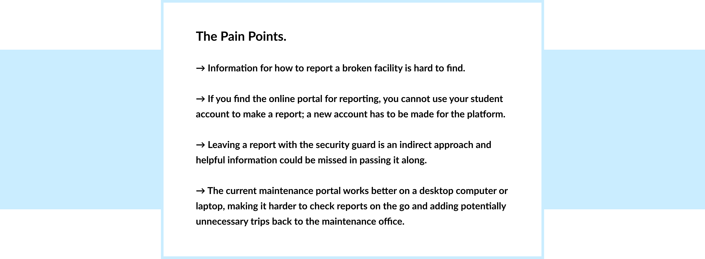
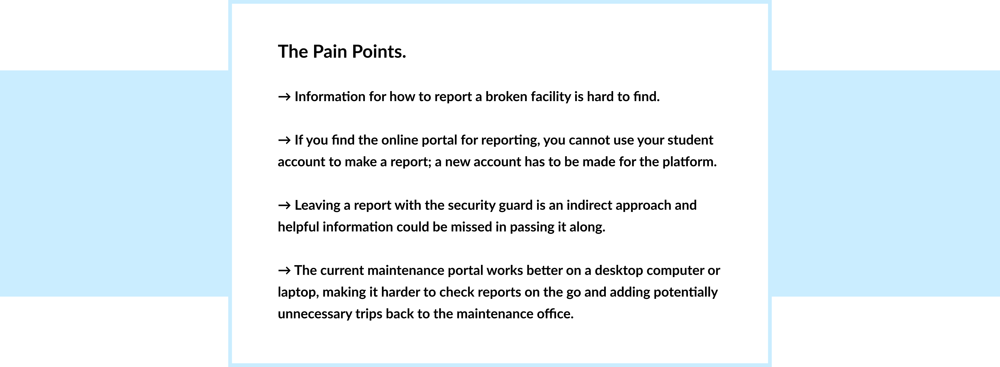
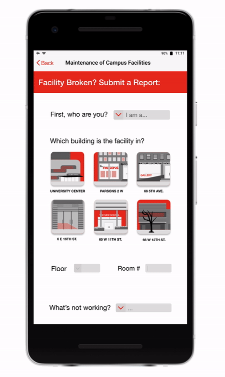
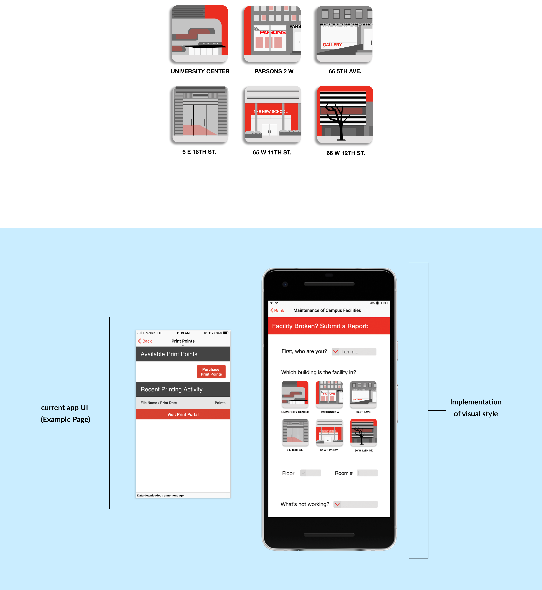

isabelanguera2@gmail.com
(434) 907-2508

The Goal
Improving the way campus facilities at The New School are reported broken and how those reports are received by maintenance.
Alicia and Thomas would both benefit from a change being made to the current system.
 

Design Choices
To make reporting easy for students and faculty to find, I wanted to incorporate the new platform into The New School app, which many students already have downloaded. With that, an online counterpart so that the app is not a necessity.
Once they’ve made it to the platform, I wanted the form to be easy and quick to fill out. To do this, there are few questions, some of which are optional, and that allow for as much expansion as one wants, though do not require it. The questions are also all on one page so that the reporter can see an overview of their report and change things without leaving the page.
The previous portal was muted and unfriendly, so for the new reporting platform I carried over school colors to match the interface of the school app and website, and made it more visual, designing icons correlating to each of the school building’s iconic facades.
For the maintenance side, the most important thing was making it an easy transition from one platform to another. Because the system worked fairly well already, I wanted the information from each report to be the same, but to make it a more pleasant and customizable experience for those receiving them. This format also works on the go so that reports can be seen without having to take a trip back to the office.
In terms of the visual experience, I wanted the interface for the maintenance side of the platform to be as friendly and clean as the reporting end. I wanted to avoid formatting defaults and carry the building icons and school colors into this interface as well.
Lastly, in the reports list, I wanted to allow for customization in how the reports are organized. One can view reports by room or floor, order them by urgency, or choose to only display reports from a specific building at a time.
Takeaways
This was the first time I had heard of proto-personas and incorporated them into my project. Lack of access in certain situations is a hurdle for students, so having this option is immensely helpful. However, it is also easy to bend these proto-personas to support the argument for a design choice. It's a balance, which I have learned is important in making a viable product.
isabelanguera2@gmail.com
(434) 907-2508